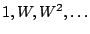
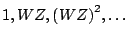
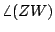
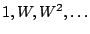
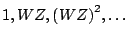
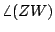
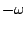
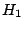
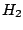

As we saw in Chapter 5, multiplying two real sinusoids together results
in a signal with two new components at the sum and difference of the
original frequencies. If we carry out the same operation with complex
sinusoids, we get only one new resultant frequency; this is one result of
the greater mathematical simplicity of complex sinusoids as compared to
real ones. If we multiply a complex sinusoid
 with another one,
 the result is
, which is another complex sinusoid whose
frequency, , is the sum of the two original frequencies.
with another one,
 the result is
, which is another complex sinusoid whose
frequency, , is the sum of the two original frequencies.
In general, since complex sinusoids have simpler properties than real ones, it
is often useful to be able to convert from real sinusoids to complex ones. In
other words, from the real sinusoid:
Of course we could equally well have chosen the complex sinusoid with
frequency :
One can design such a filter by designing a low-pass filter with cutoff
frequency  , and then performing a rotation by
, and then performing a rotation by  radians using the
technique of Section 8.3.4. However, it turns out to be
easier to do it using two specially designed networks of all-pass filters
with real coefficients.
radians using the
technique of Section 8.3.4. However, it turns out to be
easier to do it using two specially designed networks of all-pass filters
with real coefficients.
Calling the transfer functions of the two filters  and , we design
the filters so that
Having started with a real-valued signal, whose energy is split equally into positive and negative frequencies, we end up with a complex-valued one with only positive frequencies.